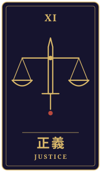
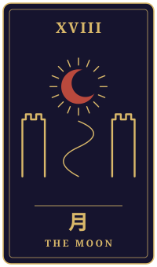
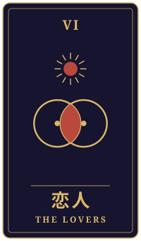

News × Tarot × Short fiction
現実の片隅に、
もうひとつの物語を。
その日のニュースと三枚の大アルカナを手がかりに、一人の暮らしを描く短編小説。占いの答えではなく、考えるための物語です。
最新作を読む


News × Tarot × Short fiction
その日のニュースと三枚の大アルカナを手がかりに、一人の暮らしを描く短編小説。占いの答えではなく、考えるための物語です。
最新作を読む

